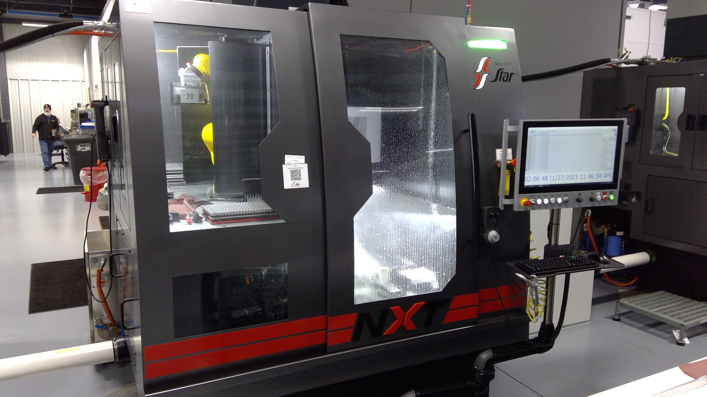
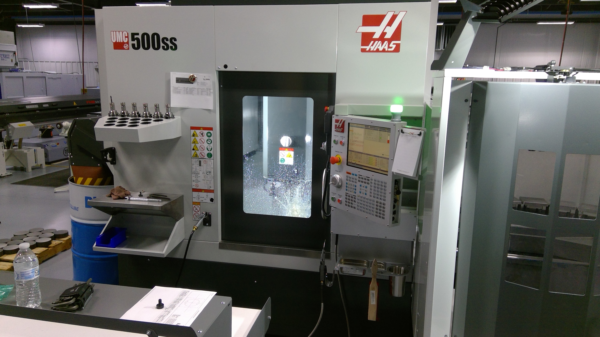
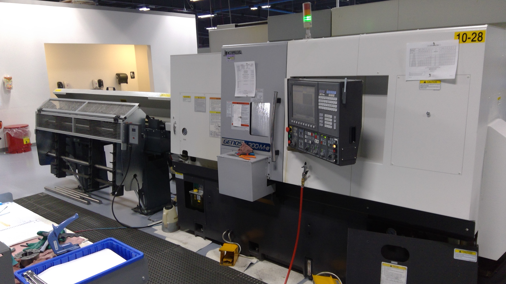
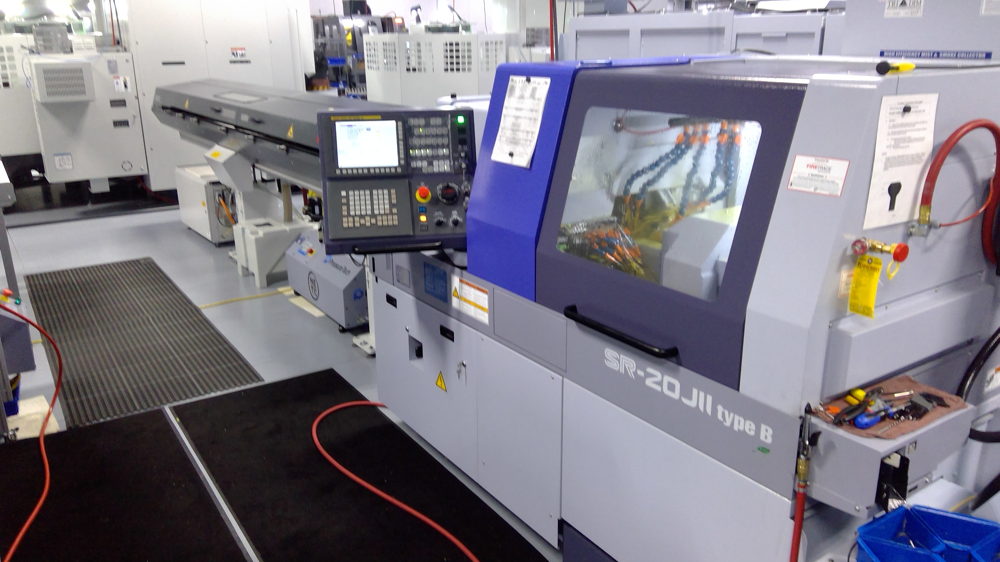

Technology
Our team of dedicated engineers and machinists produce the most cutting edge
technology. B&J's design for manufacturing and prototyping capabilities are supported
with Mastercam CAD/CAM software that is Unigraphics and Pro-E compatible.
Materials
B&J Medical, Inc. works with a wide variety of materials, including cobalt chromium,
titanium, stainless steel, super alloys, silicone, and engineered plastics.
Equipment
B&J Medical, Inc. has a full complement of Wire EDM, Horizontal and Vertical CNC and
Swiss Turning Centers.
Equipment List
- Swiss Style CNC Lathes
- 31 Star SR-20's
- 3 Star SR-32's
- 1 Star SV-32's
- 4 Star SV-38's
- 1 Star SX-38
- Three, Four, and 5-Axis CNC Mills
- 2 DMG Mori DMU 50 5-Axis
- 1 Fanuc Robodrill X-T21IFA 5-Axis
- 3 Grob G350 5-Axis
- 12 Haas DT1 3-Axis
- 12 Haas UMC 500 5-Axis
- 1 Haas UMC 750 5-Axis
- 1 Haas VF2 3-Axis
- 3 Star NXT 5-Axis
- 1 Trak K3
- 4 Willemin-Macodel 408 5-Axis
- 5 Willemin-Macodel 508 5-Axis
- 2 Yasda PX30i 5-Axis
- Submersible Wire and Sinker EDM's
- 1 Makino EDNC435 Sinker
- 1 Makino EDAF2 Sinker
- 3 Makino Edge 3 Sinker
- 1 Makino Edge 2 Sinker
- 2 Sodick AG40L Submersible Wire
- 1 Sodick AQ360LX Submersible Wire
- 1 Sodick AQ400L Submersible Wire
- 2 Sodick VZ300L Submersible Wire
- 2 Sodick VL400Q Submersible Wire
- Chucker Style CNC Lathes
- 1 Mysore Kirloskar LTD Enterprise 1550 Lathe
- 1 Okuma Genos L300-M-E 4-Axis Lathe
- Quality Assurance
- 2 Brown and Sharp Global Performance CMM with PC-DMIS Software
- 4 Keyence Vision Systems
- 23 Optical Comparators
- Additional Capabilities
- 4 Beamer Fiber Laser Marking Systems
- 1 Eldorado M75-30 Gun Drill
- Full Service Finishing Operations including Electropolish, Citric and
Nitric Passivation
- Full Service Polishing Department
- Full Service Tool Room
- 1 Fully Validated Laser, Micro Tig and Tig Welding
- Fully Validated Packaging and Labeling - Rollbag R3200/Rollbag R1275
- 1 Hagrid 618
- 1 Kalamazoo CK 12AX Production Cut off Saw
- 1 Mada HA250W Saw
- 1 Mitsubishi ED-2000NC Hole Popper
- 2 Neff Hydraulic Press
- 1 Okamoto ACC12-24DX Grind-X
- 1 Unisig 12-750 UNE12-2-750 CR Gun Drill




.jpg)